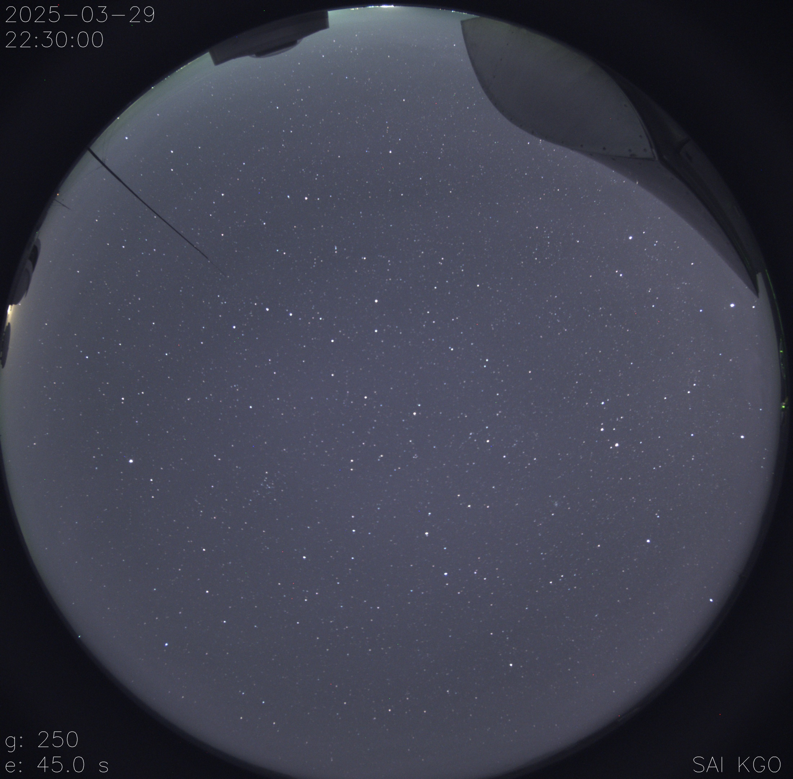
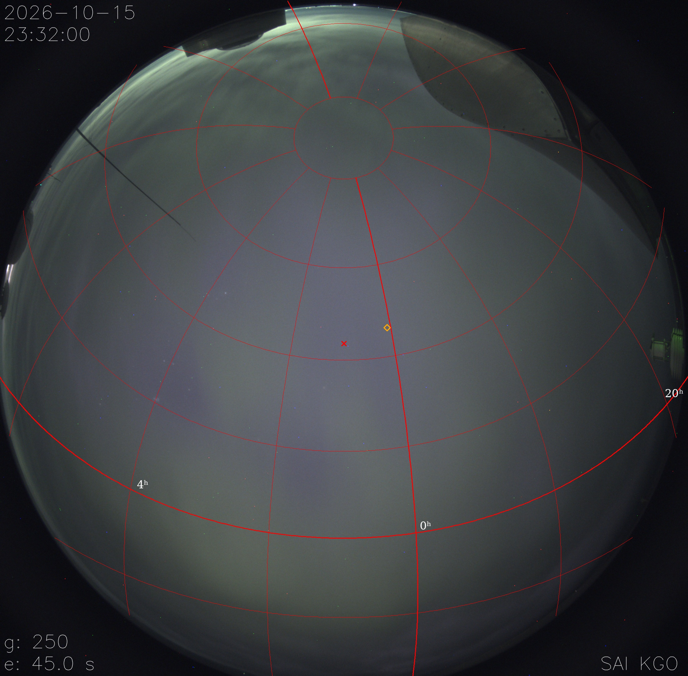

Цель проекта - разработка системы, которая раз в полчаса автоматически будет проверять изображении с all-sky камеры в КГО
Что мы имеем? У нас есть географические координаты камеры КГО и само изображение с камеры с правильно установленным временем снимка. Также у нас есть архив фотографий с камеры для тестов.

Вот так выглядит базовое изображение с камеры. На нем видны облака, звезды и Луна. Есть два пути решение проблемы: считать звезды или считать облака на снимке исключительно по цвету. Просто так считать облака по цвету будет не реально, ибо луна будет безумно мешать. Из-за этого было принято решение сопоставить изображение с камеры с расположением звезд на небе в КГО в данный момент. Но есть другая проблема, если мы будем накладывать на наше фото координатуную сетку и пытаться сопоставить звезды, относительно их координат, то мы не сможем этого просто так сделать. Изображение с all-sky-камеры - сферическое, ниже представлено изображение с координатной сеткой, которая была наложена на изображение с камеры.
Так как сервис, который в теории может помочь с сопоставлением звезд(AstroPy и еще один API-сервис к нему) работает в координатой плосткости, а не со сферой, нам надо придумать либо как перевести одни координаты в другие, либо как-то развернуть сферическое изображение, превратив его в плоское. На данный проект заморожен именно на этом этапе, так как в прошлом году все силы ушли на продолжение равития и расширения прошлого проекта "NLC Cluster By Kitvic", для которого был написан сайт и также сделано приложение для Android, которое также можно скачать на сайте.